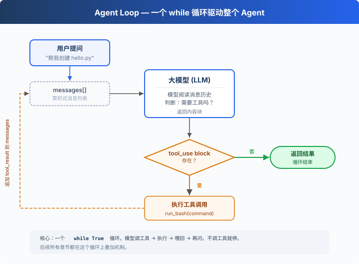

s01: Agent Loop — 一个循环就够了
s01 → s02 → s03 → s04 → ... → s16 → s17
"One loop & Bash is all you need" — 一个工具 + 一个循环 = 一个 Agent。
Harness 层: 循环 — 模型与真实世界的第一道连接。
问题
你提出了一个问题给大模型：“帮我读取下我的目录下有哪些文件，并且执行XXX.py”。
模型能输出一条 bash 命令，但输出完了就停了，它不会自己跑，也不会看到结果后继续推理。
你可以手动跑一遍，把输出粘贴回对话框，让它接着干。下一个命令出来，你再跑一遍、再贴回去。
每一个来回，你都在做中间层。而把它自动化，就是这一章要做的事。
解决方案

一个 while True 循环，模型调用工具就继续，不调用就停。循环直接检查响应里的内容块：
| 信号 | 含义 | 循环动作 |
|---|---|---|
包含 tool_use block |
模型要求调用工具 | 执行 → 结果喂回去 → 继续 |
不包含 tool_use block |
模型没有调用工具 | 退出循环 |
工作原理
将这个过程翻译成代码。分步来看：
第 1 步：把用户的问题作为第一条消息。
messages = [{"role": "user", "content": query}]
第 2 步：将消息和工具定义一起发给 LLM。
response = client.messages.create(
model=MODEL, system=SYSTEM, messages=messages,
tools=TOOLS, max_tokens=8000,
)
第 3 步：追加模型回答，检查它是否调了工具。没调 → 结束。
messages.append({"role": "assistant", "content": response.content})
tool_calls = [
block for block in response.content if block.type == "tool_use"
]
if not tool_calls:
return
只有实际存在的 tool_use block 才会进入执行阶段，因此不会追加空的工具结果消息。
第 4 步：执行模型要求的工具，收集结果。
results = []
for block in tool_calls:
output = run_bash(block.input["command"])
results.append({
"type": "tool_result",
"tool_use_id": block.id,
"content": output,
})
第 5 步：把工具结果作为新消息追加，回到第 2 步。
messages.append({"role": "user", "content": results})
组装为一个完整函数：
def agent_loop(messages):
while True:
response = client.messages.create(
model=MODEL, system=SYSTEM, messages=messages,
tools=TOOLS, max_tokens=8000,
)
messages.append({"role": "assistant", "content": response.content})
tool_calls = [
block for block in response.content if block.type == "tool_use"
]
if not tool_calls:
return
results = []
for block in tool_calls:
output = run_bash(block.input["command"])
results.append({
"type": "tool_result",
"tool_use_id": block.id,
"content": output,
})
messages.append({"role": "user", "content": results})
三十多行，这就是最小可运行的 agent harness 内核。它为模型提供持续行动的最小运行框架：模型负责决策（要不要调工具、调哪个），harness 负责执行（调用工具，把结果作为新消息追加）。后面 16 个章节都在这个循环上叠加机制，循环本身始终不变。
试一下
安全提示：代码会执行模型生成的 shell 命令。建议在一个临时测试目录中运行，避免影响你的项目文件。s03 会加入权限控制。
准备（首次运行）：
pip install -r requirements.txt
cp .env.example .env
# 编辑 .env，填入 ANTHROPIC_API_KEY 和 MODEL_ID
运行：
python s01_agent_loop/code.py
试试这些 prompt：
Create a file called hello.py that prints "Hello, World!"List all Python files in this directoryWhat is the current git branch?
观察重点：模型什么时候调用工具（循环继续），什么时候不调用（循环结束）？
接下来
现在模型手里只有 bash 一个工具，读文件要 cat，写文件要 echo ... >，找个文件要 find，又丑又容易出错。
s02 Tool Use → 给它 5 个真正的工具，会发生什么？模型会不会一次调用多个工具？几个工具同时跑会不会互相踩？